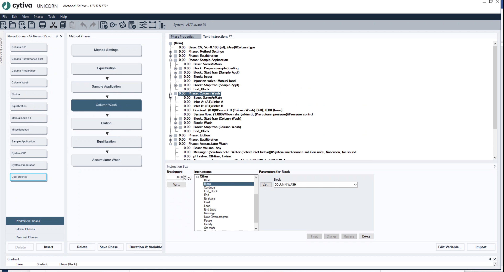
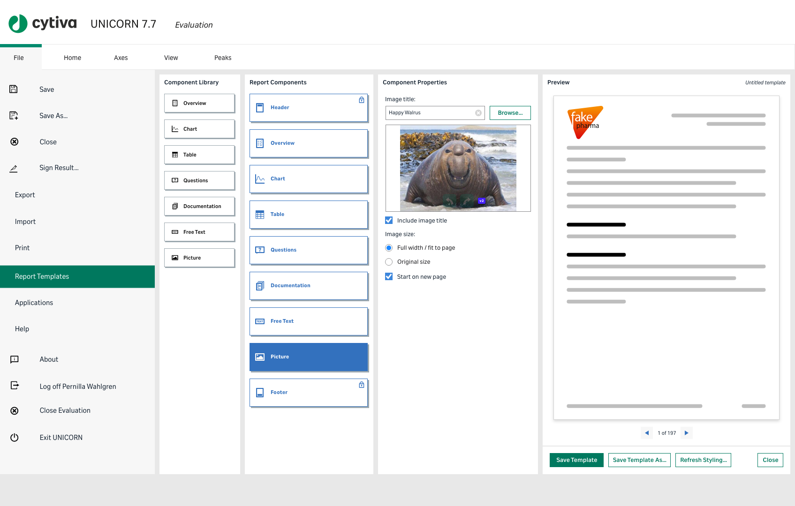

Company: Cytiva (formerly GE Healthcare Life Sciences) · Role: Senior Product Designer · Timeline: September 2020–June 2022
I was designing the software UI and hardware HMI for the flagship ÄKTA chromatography range, working in the "keystone" team. The domain was deeply complex — most people on the team had PhDs in macrobiology and I didn't even know what chromatography was when I started. It's also a massive legacy organisation where many people had worked for decades and were comfortable going very slowly without moving the needle on the product.
One specific problem: the default run report generated after each experiment was often 200 pages long because it simply printed everything. Nobody wanted to read it. Nobody configured it. It was just accepted as how things were.
I ran a series of workshops — carefully planned so they didn't feel forced. This was during COVID, so everything needed to be socially distanced. During these sessions, I discovered something surprising: most people on the team had never actually seen the chromatography instrument in use. They knew what the machine did in theory (a large array of pumps and sensors — something goes in one end, something else comes out the other) but hadn't watched it create a real product.
I arranged for internal scientists to carry out a real experiment using a sample, demonstrating exactly what they were doing when trying to optimise an output. It took place over several days because these experiments aren't quick. Suddenly, non-scientists on the team were excited to check whether the electrical conductivity was correct the next morning, or if the UV spectrometer returned a good result.
Once the team had been in the real situation — not just looking at photos on a computer — the mood shifted. People were no longer reluctant when new ideas were suggested, because they could now visualise how a change would actually help in that particular lab.
I designed a configurable report builder — working with a distributed team in India — that let users choose exactly what to include in their run reports instead of printing everything by default. The real experiment data we'd generated became the foundation for prototyping and testing. The team in India were great to work with remotely, and the collaboration felt natural despite the time zone difference.


The report builder was adopted by users and won an internal design award. More importantly, the team culture shifted from passive resistance to active engagement — all because we took the time to see the thing in action instead of just hearing scientists tell us about it.
Seeing the real context is worth more than any amount of requirements documentation. You can read specifications for months and still not understand what a user actually needs until you watch the work happen. Also: working comfortably with a distributed team across time zones is a skill, and one that's directly relevant to remote-first organisations.
{kind=link}
{kind=link}